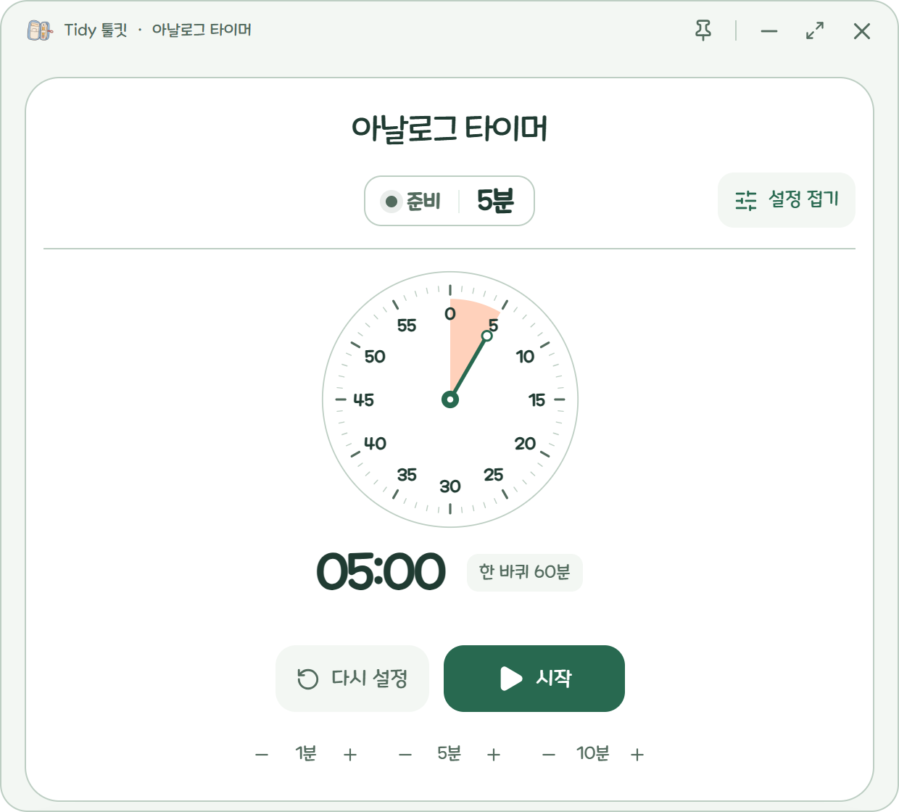
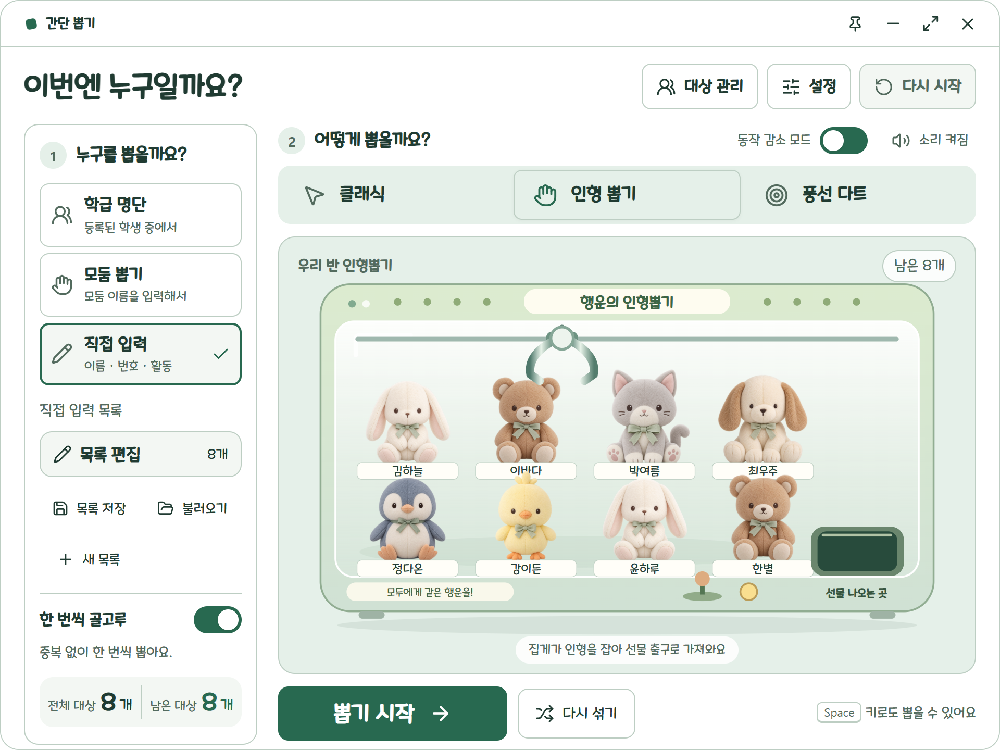
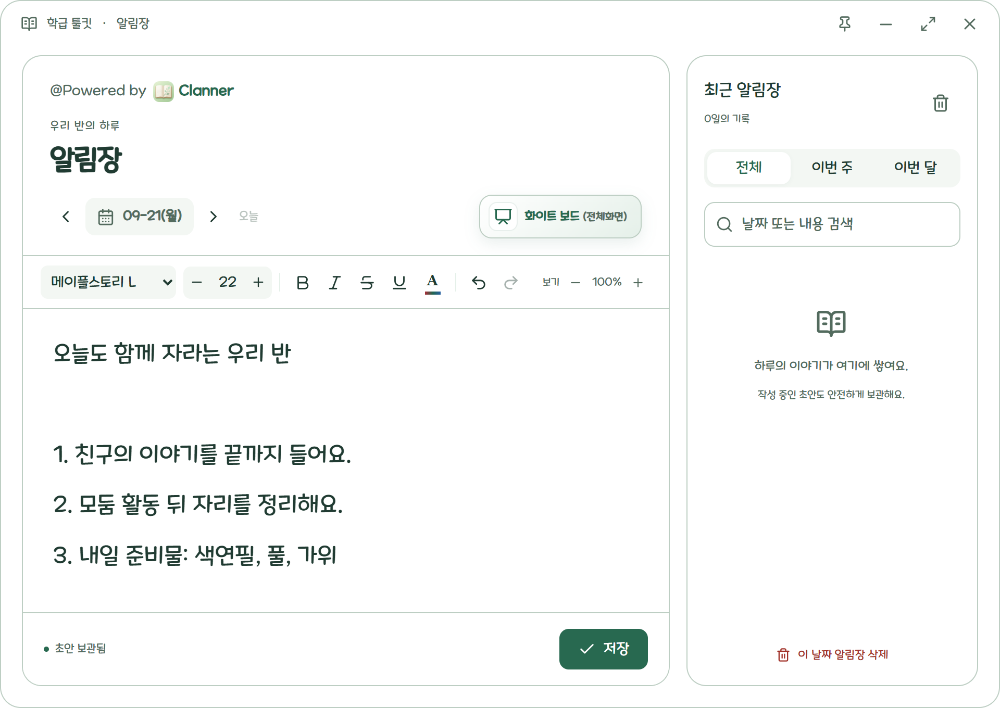

검색 결과
어떤 일을 해 볼까요?
아래에서 필요한 설명을 골라 보세요.
누를 버튼을 순서대로 안내해 드릴게요.
가이드는 이렇게 읽으세요
- 필요한 설명 찾기
- 목차에서 주제를 고르거나 위 검색창에 뽑기, 글꼴, 백업처럼 궁금한 말을 입력하세요.
- 글씨가 작게 느껴진다면
- 위의 글자 크기에서 크게 또는 더 크게를 누르세요. 이 가이드의 글자 크기만 바뀝니다.
- 버튼 이름을 모르겠다면
- 앱의 아이콘 위에 마우스를 잠시 올려 보세요. 설명에 나온 이름과 같은 버튼을 찾으면 됩니다.
할 일과 메모 적기
할 일은 한 줄씩 적고, 긴 내용은 아래 메모 공간에 적습니다.
여는 곳Tidy Task 메모 창
첫 할 일을 적으세요
내용을 입력해주세요.라고 적힌 입력칸을 누르세요. 예를 들어 ‘내일 안내장 인쇄하기’를 적고 Enter를 누르면 목록에 추가됩니다.
고치거나 완료하세요
내용을 고치려면 할 일의 글자를 누르세요. 끝낸 일은 왼쪽 완료 버튼을 누르면 마감된 일로 이동합니다.
긴 내용은 아래에 적으세요
창 아래의 메모 공간에 회의 내용이나 자주 보는 안내를 적으세요. 목록과 메모 사이의 경계선을 끌면 공간을 넓히거나 줄일 수 있습니다.
다른 메모 창과 작은 메모(Tiny Note) 열기
- 일반 메모 창
- 상단을 우클릭하고 새 창 띄우기를 선택하세요. 모던 디자인에서는 새 노트 → Tidy Task 노트로 엽니다. 창마다 다른 내용을 적을 수 있습니다.
- Tiny Note
- 상단의 새 Tiny Note 띄우기 아이콘을 누르세요. 모던 디자인에서는 새 노트 → Tiny Note로 엽니다. 작은 메모 창은 최대 10개까지 열 수 있습니다.
- 창을 옮기거나 접기
- 제목 표시줄을 끌면 창이 이동합니다. 제목 표시줄을 두 번 누르면 화면을 크게 쓰고, 다시 두 번 누르면 원래 크기로 돌아옵니다. Tiny Note의 화살표 버튼은 본문을 접거나 펼칩니다.
- 다른 창보다 앞에 두기
- 상단의 핀 모양 항상 위 버튼을 누르세요. 다시 누르면 고정이 풀립니다.
글자 꾸미기 · 여러 항목 선택
중요한 글자는 굵게 표시하고, 여러 할 일은 한꺼번에 정리할 수 있습니다.
여는 곳메모 창 상단의 서식 도구 · 모던 디자인은 ‘서식’
바꿀 글자를 선택하세요
마우스를 누른 채 글자 위를 끌어 선택하세요. 글꼴, 글자 크기, 굵게, 기울임, 밑줄, 글자 색상, 형광펜을 고를 수 있습니다.
여러 할 일을 고르세요
상단의 다중 선택 편집 모드 버튼을 누르세요. 모던 디자인에서는 메뉴 → 여러 항목 선택을 누릅니다. 바꿀 항목을 선택한 뒤 서식을 적용하거나 마감·삭제하세요.
편집을 마치세요
편집 모드 버튼을 다시 누르거나 모던 디자인의 완료를 누르세요. 이후에는 글자를 눌러 평소처럼 내용을 고칠 수 있습니다.
자간 · 기호 · 링크도 넣을 수 있어요
서식 도구의 더보기에서 글자 사이 간격인 자간을 조절하거나, 기호와 링크를 넣으세요. 링크는 주소와 표시할 텍스트를 입력한 뒤 적용을 누릅니다.
마감된 일과 아카이브
완료한 할 일과 보관한 작은 메모는 서로 다른 곳에서 확인합니다.
여는 곳메모 창의 ‘마감된 일’ · 상단 ‘아카이브 열기’ 또는 메뉴의 ‘보관함’
- 마감된 일: 완료한 할 일 목록
- 할 일의 완료 버튼을 누르면 같은 창의 마감된 일로 옮겨집니다. 다시 해야 하는 일은 이 목록에서 되돌릴 수 있습니다. 목록이 안 보이면 설정의 마감된 일 표시를 켜세요.
- 아카이브: 작은 메모를 모아 두는 별도 창
- Tiny Note 상단의 보관함 버튼을 누르면 제목과 메모 내용이 아카이브에 저장되고, 해당 Tiny Note는 비워집니다. 아카이브 창에서 보관한 메모를 찾으세요.
아카이브에서 찾고 다시 꺼내기
검색하세요
노트 검색... 입력칸에서 기록을 찾으세요. 포스트잇 보기와 목록 보기 중 읽기 편한 방식을 고를 수 있습니다.
필요한 기록을 다시 쓰세요
북마크로 자주 쓰는 메모를 표시하고, 복사로 내용을 복사하세요. 꺼내기를 누르면 보관한 기록을 다시 메모 창으로 꺼낼 수 있습니다.
보관함에서도 새 기록을 만드세요
새 노트 추가로 기록을 만들 수 있습니다. 제목과 본문을 수정하거나 테마 색상을 바꿀 수도 있습니다.
마감일과 알림
할 일에 날짜를 정해 두면 마감일을 확인하고 알림을 받을 수 있습니다.
여는 곳할 일 왼쪽의 날짜 표시 · 상단 리마인더(알림) 버튼
날짜를 정하세요
할 일 왼쪽의 마감일 설정 버튼을 누르고 달력에서 날짜를 선택하세요. 새 할 일을 적을 때도 입력칸 옆 날짜 버튼으로 미리 지정할 수 있습니다.
알림이 켜져 있는지 확인하세요
상단의 리마인더 버튼을 확인하세요. 모던 디자인에서는 알림, 시스템 설정에서는 통합 리마인더로 표시됩니다.
알림창에서 처리하세요
끝낸 일은 알림창의 마감 (항목 완료) 버튼을 누르세요. 나중에 보려면 1시간 후 또는 시간 지정을 선택하세요. 시간 지정은 지금부터 몇 시간·몇 분 뒤에 다시 알릴지 정하는 기능입니다.
오늘만 알림을 쉬거나, 창을 더 선명하게 보기
알림창의 오늘 끄기로 오늘의 알림을 끌 수 있습니다. 알림창 상단의 투명도 조절 막대를 움직이면 창의 진하기가 바뀝니다.
Tidy 툴킷 켜기
툴킷은 타이머와 뽑기 같은 수업 도구를 모아 둔 도구 모음입니다.
여는 곳메모 창의 설정 → Tidy 툴킷
툴킷을 켜세요
메모 창의 설정에서 Tidy 툴킷을 켜세요. 모던 디자인에서는 메뉴에서도 켤 수 있습니다. 화면에 도구 이름이 나란히 있는 툴바가 나타납니다.
필요한 도구를 누르세요
예를 들어 타이머를 누른 뒤 아날로그 타이머를 고르세요. 선택한 도구가 별도의 창으로 열립니다.
쓰기 편한 자리로 옮기세요
도구 창의 제목 표시줄을 끌어 원하는 곳에 두세요. 툴바의 설정에서는 가로·세로 방향과 크기를 바꿀 수 있습니다.
실제 화면 보기
타이머 · 스톱워치
활동이 끝날 시간을 정하거나, 시작한 뒤 얼마나 지났는지 잽니다.
여는 곳Tidy 툴킷 → 타이머 → 도구 선택
시간을 보여 줄 모양을 고르세요
전광판 타이머는 큰 숫자, 아날로그 타이머는 시계판의 색, 모래시계는 줄어드는 모래로 남은 시간을 보여 줍니다. 경과 시간을 재려면 스톱워치를 선택하세요.
시간을 정하세요
타이머의 설정 보기를 누르고 빠른 설정에서 5분 같은 시간을 누르세요. 직접 정하려면 분·초를 입력하고 시간 적용을 누릅니다. 스톱워치는 시간을 정하지 않아도 됩니다.
시작하고 잠시 멈추세요
시작을 누르세요. 진행 중에는 일시정지, 멈춘 뒤에는 계속하기를 누릅니다. 타이머 아래의 +·− 버튼으로 1·5·10분씩 조절할 수도 있습니다.
다시 쓰거나 기록하세요
타이머는 다시 설정으로 시간을 다시 준비합니다. 스톱워치는 진행 중 기록으로 중간 기록을 남기고, 초기화로 경과 시간과 기록을 지웁니다.
소리와 화면 표시 바꾸기
- 활동 제목과 설명
- 타이머 위쪽의 활동 제목을 눌러 이름을 적으세요. 설명 추가에는 활동 방법이나 준비물을 적을 수 있습니다. 설명은 접어 둘 수 있습니다.
- 진행음 · 종료 경고음 · 종료음
- 설정에서 필요한 소리를 각각 켜거나 끄세요. 듣기로 미리 들어 볼 수 있습니다. 종료 전 알림은 몇 초 전에 울릴지와 알림 길이도 정합니다. 스톱워치는 진행음을 설정합니다.
- 아날로그 한 바퀴 기준
- 30분 또는 60분으로 바꿀 수 있습니다. 남은 시간이 30분보다 많으면 30분 기준은 선택할 수 없습니다.
- 모래시계의 숫자
- 설정의 남은 시간 표시를 켜면 모래시계 아래에 숫자도 나타납니다.
- 시간 입력이 안 될 때
- 타이머가 진행 중이면 분·초 입력과 빠른 설정을 바꿀 수 없습니다. 먼저 일시정지하세요.
실제 화면 보기

시계 보기
지금 한국 표준시를 크게 보여 줍니다. PC 시각이 틀려 있어도 한국표준과학연구원 시간 서버에 맞춰 바로잡아 보여 줍니다.
여는 곳Tidy 툴킷 → 시계
모양을 고르세요
창 아래의 디지털 · 아날로그를 누르세요. 오른쪽의 시:분:초 · 시:분으로 초를 보이거나 감춥니다. 다음에 열 때도 마지막 선택을 기억합니다.
제목을 적어 보세요
위쪽 칸에 3학년 2반, 10시 40분에 끝나요처럼 30자까지 적을 수 있습니다. 필요 없으면 칸 오른쪽의 ^ 버튼으로 숨기고, 제목줄의 이름표 버튼으로 다시 꺼냅니다.
전체 화면으로 크게 띄우세요
제목줄의 전체 화면 버튼이나 F11을 누르세요. 마우스가 3초 멈추면 조작 도구가 사라지고 시계만 남습니다. Esc를 누르면 나옵니다.
설정 더 보기
제목줄의 설정 버튼에서 12시간 · 24시간 표기, 표준시 맞춤, 아날로그 시계의 디지털 시각 함께 보기와 분 숫자 보기를 바꿉니다. 분 숫자를 켜면 시계 바깥에 5, 10, 15…가 적혀 시계 읽기 수업에 도움이 됩니다.
학급 명단 · 모둠 만들기
학급을 만든 뒤 학생을 등록하세요. 등록한 명단은 뽑기와 토너먼트에서 불러올 수 있습니다.
여는 곳Tidy 툴킷 → 학급 명단
학급을 만드세요
첫 학급 만들기 또는 학급 추가를 누르고 학급 이름을 입력하세요. 여러 학급을 따로 관리할 수 있습니다.
학생을 등록하세요
학생 명단 아래에 번호와 이름을 입력하고 추가를 누르세요. 성별은 필요한 경우에만 선택하면 됩니다. 기존 학생은 목록의 번호·이름·성별 칸에서 수정합니다.
명렬표가 있다면 가져오세요
파일 가져오기 → 파일 선택으로 PDF·XLSX·CSV·HWPX 파일을 고르세요. 또는 이름·표 붙여넣기에 내용을 붙이고 명단 확인을 누르세요. 파일 크기는 최대 20MB입니다.
미리보기를 확인한 뒤 반영하세요
가져올 번호·이름·성별과 학생 수를 확인하세요. 잘못 읽힌 칸은 고치고, 필요 없는 행의 등록 체크는 해제합니다. 기존 학생 연결도 확인한 뒤 ○명 반영을 누르세요.
모둠 만들고 학생 배정하기
모둠을 만드세요
모둠 구성 → 모둠 만들기를 누르고 이름을 입력하세요.
학생을 고르고 이동하세요
학생을 선택한 뒤 이동할 모둠을 고르고 이동을 누르세요. 모둠 카드의 선택한 ○명 여기로 버튼으로도 옮길 수 있습니다.
배정을 정리하세요
학생은 한 모둠에 속합니다. 모둠에서 빼려면 미배정으로 옮기세요. 모둠을 삭제해도 학생 명단은 남습니다. 잘못 바꿨다면 실행 취소를 누르세요.
학생 찾기 · 기본 학급 정하기
학생 명단 위의 검색칸에 번호나 이름을 입력하세요. 번호순·이름순 정렬과 학생 필터로 범위를 좁힐 수 있습니다.
자주 쓰는 학급은 기본 학급으로를 누르세요. 이미 열린 도구가 사용 중인 학급은 그대로이므로, 도구 안에서도 선택한 학급을 확인하세요. 등록한 학생과 모둠은 이 기기에 자동 저장됩니다.
파일이 잘 읽히지 않거나, 기존 명단이 있을 때
열을 자동으로 찾지 못할 때 → 직접 열 지정에서 번호·이름·성별 열과 학생 시작 행을 정한 뒤 파일을 다시 선택하세요. 열 번호는 왼쪽부터 1입니다.
기존 학생은 기본적으로 유지됩니다. 미리보기의 기존 학생 삭제 선택에서 직접 선택한 학생만 삭제 대상이 됩니다.
간단 뽑기
발표할 학생, 활동 순서, 모둠 이름 등을 뽑습니다.
여는 곳Tidy 툴킷 → 간단 뽑기
뽑을 대상을 정하세요
등록된 학생을 뽑으려면 학급 명단에서 학급을 선택하세요. 이름이나 활동을 직접 넣으려면 직접 입력 → 목록 입력에서 한 줄에 하나씩 입력하세요.
모둠을 뽑으려면 이름을 입력하세요
모둠 뽑기 → 목록 입력에서 모둠 이름을 한 줄씩 적으세요. 이 기능은 학급 명단의 모둠을 자동으로 불러오는 방식이 아닙니다.
뽑기 모양과 중복 여부를 고르세요
클래식·인형 뽑기·풍선 다트 중 디자인을 고르세요. 한 번씩 골고루를 켜면 이미 뽑힌 대상은 다음 뽑기에서 빠집니다. 바로 결과 보기를 켜면 애니메이션 없이 누르는 즉시 결과가 나옵니다(창을 열 때마다 꺼진 상태로 시작합니다).
뽑기를 시작하세요
뽑기 시작을 누르세요. 대상 관리에서 제외할 대상을 확인할 수 있습니다. 직전 뽑기 취소는 바로 전 결과를 되돌리고, 다시 시작은 뽑기 기록을 초기화합니다.
같은 목록을 다시 쓰거나 연출 줄이기
직접 입력한 목록은 목록 저장으로 보관하고 불러오기로 다시 사용할 수 있습니다. 뽑기 설정에서 소리와 동작 감소 모드도 조절할 수 있습니다.
실제 화면 보기

토너먼트 진행하기
참가자를 넣고 경기마다 승자를 선택하면 다음 대진으로 올라갑니다.
여는 곳Tidy 툴킷 → 토너먼트
대진표를 만드세요
대회 이름을 적고 4·8·16·32·64강 중 규모를 고른 뒤 대진표 만들기를 누르세요. 참가자가 적으면 빈자리는 부전승으로 처리됩니다.
참가자를 넣으세요
이름을 한 줄에 한 명씩 적고 명단 적용을 누르세요. 학급 명단 불러오기에서는 학급과 참가 단위(학생·모둠)를 고른 뒤 선택한 명단 적용을 누릅니다.
대진을 확인하고 시작하세요
대진 섞기로 순서를 바꿀 수 있습니다. 특정 자리끼리 바꾸려면 자리 번호 두 개를 차례로 선택하세요. 준비가 끝나면 경기 시작을 누르세요.
경기마다 승자를 누르세요
이긴 참가자를 누르면 다음 라운드로 진출합니다. 같은 승자를 다시 누르면 진출이 취소됩니다. 마지막에는 우승자 보기로 결과를 확인하세요.
대진표를 크게 보거나 나중에 이어서 하기
전체·왼쪽·오른쪽·결승 보기와 확대·축소를 이용하세요. 글씨가 작으면 큰 글씨를 누르세요.
대회는 자동 저장됩니다. 대회 목록으로 돌아가 저장된 대회를 선택하면 이어서 진행할 수 있습니다. 결과 초기화는 진행한 경기 결과를 지우므로 새로 시작할 때 사용하세요.
날짜별 알림장 쓰기
준비물과 안내를 날짜별로 적고, 전체화면으로 보여 줄 수 있습니다.
여는 곳Tidy 툴킷 → 알림장
날짜를 고르세요
위쪽 날짜를 누르거나 좌우 화살표로 이동하세요. 오늘을 누르면 오늘 날짜로 돌아옵니다.
내용을 적고 저장하세요
본문에 안내를 적으세요. 글꼴·글자 크기·굵게·글자색으로 중요한 내용을 표시하고 저장을 누르세요.
큰 화면으로 보여 주세요
화이트 보드(전체화면)를 누르세요. 화면에서 서식을 바꾸려면 도구를 펼치세요. 일반 화면 또는 Esc로 돌아옵니다.
지난 기록을 찾아보세요
기록 열기에서 날짜나 내용으로 검색하세요. 삭제한 기록은 휴지통에서 확인하고 복원할 수 있습니다.
실제 화면 보기

집중벨 울리기
활동을 바꾸거나 안내를 시작할 때 짧은 소리를 재생할 수 있습니다.
여는 곳Tidy 툴킷 → 집중벨
음량을 먼저 확인하세요
아래의 음량 막대로 크기를 조절하세요. 음소거가 켜져 있으면 소리가 나지 않습니다.
원하는 소리를 누르세요
벨·사이렌·폭탄·방구 중 하나를 누르면 한 번 재생됩니다. 같은 소리를 다시 누르면 처음부터, 다른 소리를 누르면 선택한 소리로 바뀝니다.
멈추려면 정지를 누르세요
아래의 정지 또는 Esc를 누르세요. 전체화면에서 Esc를 누르면 소리가 멈추고 전체화면도 해제됩니다.
주사위 던지기
주사위를 1~3개 던지고 합계를 크게 보여 줍니다.
여는 곳Tidy 툴킷 → 주사위
주사위 개수를 고르세요
창 아래의 1개 · 2개 · 3개 중 하나를 누르세요. 처음에는 1개로 시작하고, 다음에 열 때는 마지막으로 고른 개수를 기억합니다.
던지기를 누르세요
던지기나 Space를 누르면 주사위가 굴러갑니다. 주사위가 1개면 나온 숫자만, 2개 이상이면 5 + 2 = 7처럼 식과 합계가 나옵니다.
같은 눈이 나오면 배지가 떠요
주사위 2개가 같으면 더블!, 3개가 모두 같으면 트리플!이 결과 칸 오른쪽 위에 잠깐 나타납니다.
점수판 쓰기
학생·모둠·직접 적은 항목에 점수를 주고, 교실 뒤에서도 보이게 크게 보여 줍니다. 누르는 즉시 저장되어 창을 닫았다 열어도 그대로입니다.
여는 곳Tidy 툴킷 → 점수판 → 개인 · 모둠 · 커스텀
점수판 종류를 고르세요
개인 점수판은 학급 명단의 학생으로 바로 만들어집니다. 명단이 없으면 학급 명단 등록하러 가기를 눌러 먼저 학생을 등록하세요. 모둠 점수판은 모둠 수만 정하면 되고, 커스텀 점수판은 항목을 한 줄에 하나씩 적어 만듭니다.
한 번에 바꿀 점수를 정하세요
위쪽의 1 · 2 · 5 · 10이나 직접을 누르면 카드의 + / − 버튼이 그만큼 점수를 바꿉니다. 점수는 0 아래로도 내려갑니다.
카드의 + / −를 누르세요
점수가 굴러가며 바뀌고 1~3위에는 순위 뱃지가 붙습니다. 여러 학생에게 한꺼번에 주려면 여러 명 선택으로 카드를 고른 뒤 + / −를 누르세요. 개인 점수판은 모둠으로 고르기로 모둠 전체를 한 번에 고릅니다.
점수 고치기 · 되돌리기 · 초기화
점수를 두 번 누르면 숫자를 직접 고칩니다. 모둠·커스텀 점수판은 이름을 두 번 눌러 이름도 고칩니다. 실수했다면 되돌리기나 Ctrl + Z를 누르세요. 점수 초기화도 되돌릴 수 있습니다.
커스텀 점수판은 위쪽 점수판 이름을 눌러 다른 점수판으로 바꾸거나 + 새 점수판 · 이 점수판 복제 · 이 점수판 삭제를 고릅니다. 지운 점수판은 알림의 되돌리기로 되살립니다.
학급 온도계
반 전체가 함께 올리는 온도계입니다. 칭찬이 쌓이면 목표에 다가가고, 경고 온도계로 약속 지키기 연습도 할 수 있습니다.
여는 곳Tidy 툴킷 → 학급 온도계
목표를 정하세요
설정 → 기본에서 최대 온도(처음 10°)와 목표 보상(예: 피자 파티)을 적고, 필요하면 목표 기한을 고릅니다. 무드는 긍정(파랑)과 부정(빨강) 중에 고릅니다.
중간 보상을 넣으세요
설정 → 단계의 눈금자에서 온도를 눌러 단계를 더하고 이름을 적습니다(예: 5° 자리 바꾸기). 온도계 옆에 스티커로 보이고, 닿으면 축하합니다.
올리기 · 내리기를 누르세요
한 번에 움직이는 양은 설정 → 조작에서 바꿉니다(처음 1). 올린 직후 잠깐 뜨는 사유 칩(협동 · 발표…)을 누르면 기록에 이유가 함께 남습니다.
온도계 두 개 쓰기 · 경고 온도계
처음에는 온도계 1개로 시작합니다. 설정 → 기본 → 두 번째 온도계를 누르면 칭찬 온도계와 경고 온도계를 나란히 띄웁니다(최대 2개). 경고 온도계는 한계에 닿으면 축하 대신 경고등이 켜지고, 기한까지 한계에 닿지 않으면 약속 지킴 도장을 받습니다.
기록 · 자동 식힘 · 도장판
기록에서 요일별 막대그래프와 변화 목록을 봅니다. G를 누르면 그래프를 크게 띄워 학급 회의에서 함께 볼 수 있습니다.
설정 → 조작 → 자동 식힘을 켜면 매일 아침 0으로, 매일 조금씩, 매주 월요일 0으로 중에서 골라 온도가 저절로 내려갑니다(처음엔 꺼짐). 목표에 닿을 때마다 도장이 찍히고, 도장판이 가득 차면 도장판 보상을 알려 줍니다.
학급 투표
칠판(TV)에 띄워 두고 학생이 한 명씩 키보드 숫자키로 비밀 투표합니다. 반장 선거, 체험학습 장소 정하기, 학급 규칙 찬반까지 한 창에서 만들고 개표합니다.
여는 곳Tidy 툴킷 → 학급 투표
투표를 만드세요
새 투표 만들기를 누르고 방식(후보 · 의견 · 찬반)을 고른 뒤 이름을 적습니다. 빠른 시작(학급 회장 선거, 체험학습 장소 등)을 누르면 규칙이 미리 채워집니다. 후보는 성별을 고르면 서로 다른 캐릭터와 색이 붙습니다. 기호는 기호 추첨으로 정할 수도 있습니다.
규칙과 개표 방법을 정하세요
투표 인원, 한 사람이 찍는 표 수(1~5), 몰아주기 · 기권 허용, 당선 인원을 정합니다. 개표는 바로 결과 · 한 장씩 펼치기 · 실시간 레이스 · 개표 방송 · 반전 공개 · 골라 공개 중에 고르고, 결과를 모두 공개 · 순위만 · 당선자만 보여 줄지도 정합니다.
학생들이 볼 수 있게 준비하세요
준비 화면에서 창을 칠판으로 옮기고 전체 화면으로 크게 만든 뒤 소리를 들어 봅니다. 안내 시작을 누르면 투표 방법을 천천히 보여 주고 읽어 줍니다(한국어 음성이 있는 PC).
한 명씩 투표해요
투표판은 처음부터 열려 있습니다. 학생이 후보 번호 숫자키를 누르면 투표함에 들어가고, 투표했어요! → 다음 친구 차례예요가 잠깐(약 3초) 지난 뒤 다음 학생의 투표판이 저절로 열립니다. Enter를 누를 필요가 없습니다. 0은 기권입니다.
잘못 눌렀다면 다음 학생이 투표하기 전에 Backspace를 누르거나 투표판 오른쪽 위의 다시 투표하기를 누르세요. 확인 창이 뜨고, Enter(또는 다시 투표하기)를 누르면 방금 들어간 표 1장이 빠져 처음부터 다시 고를 수 있습니다. Esc(또는 아니요)는 그대로 둡니다. 마지막 학생이 투표하면 저절로 마감됩니다. 준비 화면에서 남성·여성 안내 목소리를 선택할 수 있으며 기본 안내는 인터넷 없이 재생됩니다.
개표하세요
마감 화면의 개표 시작을 누르면 고른 방법으로 개표가 시작됩니다. 다음 · 자동 재생 · 속도를 바꾸거나 결과로 건너뛰기를 할 수 있습니다. 결과는 PNG로 저장하거나 복사해 한글 · 파워포인트에 붙여 넣을 수 있습니다.
비밀은 이렇게 지켜집니다
투표판에는 누른 번호가 보이지 않고, 어떤 번호를 누르든(기권 포함) 같은 화면과 같은 소리가 납니다. 표는 순서가 섞여 저장되고 시각도 남기지 않아, 나중에 누가 무엇을 골랐는지 알 수 없습니다. 선생님도 개표 전에는 득표를 볼 수 없습니다.
배경 음악
학급 투표에는 배경 음악이 깔립니다. 투표를 만들고 준비하는 동안, 학생들이 안내를 보고 투표하는 동안, 개표하는 동안 각각 다른 곡이 나오고, 화면이 바뀔 때 부드럽게 넘어갑니다. 안내 음성이 나오거나 마감 · 당선 같은 큰 소리가 날 때는 음악이 잠깐 작아집니다.
음악을 끄려면 제목줄의 음악 스위치(모든 화면 같은 자리)나 선생님 메뉴의 배경 음악을 끄세요. 한 번 끄면 다른 화면으로 넘어가도, 다음에 투표판을 열어도 꺼진 채로 있습니다. 다시 켜면 멈춘 곳에서 이어서 나옵니다. 전체 소리가 꺼져 있을 때 음악을 켜면 소리도 함께 켜집니다. 창을 열었는데 음악이 들리지 않으면 화면을 한 번 눌러 주세요.
선생님 메뉴 · 선생님 창
투표 중에는 제목줄의 선생님 버튼을 누르면 경고 창이 먼저 뜨고, 메뉴 열기를 누르면 참여 인원 · 인원 바꾸기 · 마감하고 개표하기 · 직전 표 취소 · 안내 다시 보기 · 소리 설정이 차례로 나옵니다. 선생님 메뉴는 마우스로만 열리고(학생 키보드로는 열리지 않음), 메뉴가 열려 있는 동안에는 투표판이 키를 받지 않습니다 — 잠깐 설명할 때는 메뉴를 열어 두세요. 메뉴 맨 아래의 처음부터 다시 받기는 받은 표만 비우고 첫 친구부터 다시 받습니다(10초 안에 되돌리기).
투표 중에 마우스로 다른 창을 눌러도 투표는 멈추지 않고, 투표판이 키보드를 빼앗아 오지도 않습니다. 다른 창에 자유롭게 입력할 수 있습니다. 그동안 투표판 왼쪽 위에 키보드가 다른 창에 있어요가 뜹니다. 학생들이 다시 투표하려면 투표판을 한 번 눌러 주세요.
투표판 오른쪽 아래의 마감하고 개표하기 · 투표 그만두기로도 바로 마감하거나 그만둘 수 있습니다. 두 버튼 모두 마우스로만 눌리고, 누르면 확인 창이 한 번 더 뜹니다. 그만둔 투표는 10초 안에 되돌리기로 살릴 수 있습니다.
준비 화면의 선생님 창 따로 열기를 누르면 노트북 화면 같은 다른 모니터에 조종실이 뜹니다. 칠판은 학생 화면 그대로 두고, 선생님 창에서 인원 · 마감 · 개표 넘기기 · 골라 공개를 합니다. 선생님 창을 누르거나 옮긴 뒤에는 키보드가 자동으로 투표판으로 돌아갑니다.
동점 · 결선 투표 · 기록함
당선 자리를 두고 동점이면 결과 화면에 동점이 표시되고 결선 투표를 할까요?가 나옵니다. 결선 투표 시작을 누르면 동점인 후보만 같은 규칙으로 다시 투표합니다(추첨이나 직접 지정은 없습니다).
끝난 투표는 기록함에 최근 30개까지 남습니다. 결과 다시 보기 · 다시 개표 · 같은 설정으로 새 투표를 할 수 있습니다.
오늘의 급식 보기
학교를 등록하면 날짜별 식단을 확인할 수 있습니다.
여는 곳메모 창 상단의 급식 아이콘 · 모던 디자인은 ‘급식’
학교를 찾으세요
학교 이름을 두 글자 이상 입력하세요. 검색 결과의 학교 이름과 주소를 확인한 뒤 등록하세요.
날짜를 바꿔 보세요
좌우 화살표로 다른 날짜를 확인하세요. 창을 넓히면 주간 보기로 바뀌고, 이때 화살표는 한 주씩 이동합니다. T를 누르면 오늘로 돌아옵니다.
보기 편하게 맞추세요
급식 설정에서 끼니, 알레르기 표시, 영양·원산지 정보와 글꼴·글자 크기를 바꿀 수 있습니다. 선택한 알레르기는 메뉴 옆에 표시됩니다.
메뉴를 복사하세요
메뉴 복사 버튼 또는 Ctrl + C로 현재 날짜의 메뉴를 복사해 안내문 등에 붙여 넣으세요.
툴킷 모양과 도구 바꾸기
툴바의 크기와 방향을 바꾸고, 자주 쓰는 도구만 남겨 보세요.
여는 곳Tidy 툴킷 툴바 → 설정
- 방향 · 크기 · 접기
- 가로 또는 세로 방향을 선택하세요. 크기는 매우 작게·작게·보통·크게·매우 크게 중에서 고릅니다. 툴바의 접기 버튼으로 차지하는 공간을 줄일 수도 있습니다.
- 색상과 다크 모드
- 세이지·앰버·오션·로즈·라벤더·슬레이트 테마가 있습니다. 다크 모드를 끄면 선택한 색상으로 돌아옵니다. 메모 창의 테마와는 별도로 설정합니다.
- UI 글꼴
- UI 설정에서 툴킷 화면 전체에 쓸 글꼴을 고릅니다. 목록에는 내장 글꼴과 Tidy Task 설정에서 추가한 글꼴이 함께 나옵니다. 여기서 고른 글꼴은 툴킷에만 적용되고 메모 창의 글꼴은 바뀌지 않습니다.
- 표시할 도구
- 자주 쓰는 도구만 켜 두세요. 표시를 끄면 툴바에서 버튼이 숨겨집니다. 해당 도구에 작성한 기록을 삭제하는 기능은 아닙니다.
- 외부 툴
- 롤린썬더와 클래너를 브라우저로 열 수 있습니다. 외부 툴 사용 여부와 표시할 서비스를 설정하세요. 웹 서비스에는 인터넷 연결이 필요합니다.
앱 설정 · 자료 내보내기
메모 창의 글꼴과 디자인을 바꾸고, 필요한 자료를 파일로 남깁니다.
여는 곳메모 창 상단을 우클릭 → 설정 · 모던 디자인은 메뉴 → 설정
- 글꼴과 글자 크기
- 설정에서 본문과 화면 도구에 쓰는 글꼴·크기를 조절하세요. 메모의 기본 글꼴은 메이플스토리체입니다. PC의 글꼴 파일을 등록해 사용할 수도 있습니다.
- 상단 디자인
- 모던은 서식·알림·급식처럼 이름이 보이는 버튼을 사용합니다. 아이콘이 익숙하지 않다면 모던을 선택해 보세요. 클래식은 아이콘 중심의 배치입니다.
- 테마 · 알림 · 소리
- 메모의 15가지 색상 테마와 다크 모드, 마감된 일·중요한 메모 표시, 통합 리마인더와 전체 무음 모드를 설정할 수 있습니다.
- 업데이트
- 설정에서 현재 버전과 새 버전을 확인하세요. 업데이트 안내에서는 내려받기, 내일 다시 알림, 이 버전 건너뛰기를 선택할 수 있습니다.
메모를 TXT 파일로 내보내고 가져오기
내보낼 메모 창을 여세요
그 창의 상단을 우클릭하고 메모장으로 내보내기를 선택하세요. 현재 창의 할 일·마감된 일·아래 메모가 TXT 파일로 저장됩니다.
가져오기 전에 현재 내용을 남기세요
메모장 가져오기는 현재 창의 할 일·마감된 일·메모를 가져온 내용으로 바꿉니다. 기존 내용이 필요하면 먼저 내보내세요. TXT는 글자 내용 중심이므로 원래의 꾸밈 서식을 보관하는 용도가 아닙니다.
학급 명단 백업하고 복원하기
학급 명단 → 데이터 내보내기로 학급 자료를 별도 파일에 보관하세요. 복원할 때는 같은 창의 백업 복원에서 파일을 선택합니다.
백업 복원은 현재 학급 자료를 백업 파일의 학급 자료로 대체합니다. 안내에 나온 학급 수와 내용을 확인한 뒤 진행하세요.
공지의 숨기기 버튼은 어떻게 다른가요?
오늘 그만보기는 오늘 자정까지 숨깁니다. 더 이상 보지 않기는 해당 공지에 적용됩니다. 닫기는 현재 창만 닫고 숨김 설정은 바꾸지 않습니다.
자주 쓰는 단축키
단축키를 외우지 않아도 버튼으로 사용할 수 있습니다. 익숙해지면 필요한 것부터 써 보세요.
여는 곳각 기능을 사용 중인 창
- 메모 입력칸에서 Enter
- 입력한 내용을 새 할 일로 추가합니다.
- 메모 창에서 Ctrl + S
- 현재 입력한 내용을 바로 저장합니다.
- Ctrl + Z / Ctrl + Y
- 실행 취소 / 다시 실행입니다. 글을 편집 중일 때는 그 편집 내용에 적용됩니다.
- Ctrl + C / Ctrl + V
- 선택한 내용을 복사 / 붙여넣기합니다. 메모 창의 여러 항목 선택 모드에서 글자를 편집하지 않는 상태로 여러 줄을 붙여넣으면, 한 줄씩 할 일로 추가됩니다. 한 번에 최대 10줄입니다.
- 여러 항목 선택 중 Ctrl + B / I / U
- 선택한 할 일을 굵게 / 기울임 / 밑줄로 바꿉니다.
- 메모 창에서 Alt + Shift + N / W
- 글자 사이 간격을 좁게 / 넓게 조절합니다.
- 타이머 · 뽑기에서 Space
- 타이머를 시작·일시정지하거나 뽑기를 시작합니다. 입력칸이나 다른 조작 버튼을 사용 중일 때는 화면의 시작 버튼을 누르세요.
- 주사위에서 Space · 1 / 2 / 3 · M
- 주사위를 던집니다 · 주사위 개수를 바꿉니다 · 효과음을 켜고 끕니다.
- 점수판에서 1 ~ 0 · Shift + 숫자
- 모둠 · 커스텀 점수판(10개 이하)에서 그 번호 카드에 점수를 더합니다 · 뺍니다. F는 전체화면, M은 효과음입니다.
- 학급 온도계에서 ↑ / ↓ · 1 / 2 · G
- 고른 온도계를 올립니다 / 내립니다 · 온도계를 고릅니다 · 주간 그래프를 크게 봅니다.
- 학급 투표에서 숫자 · 0 · Backspace
- 그 번호 후보를 찍습니다 · 기권합니다 · 방금 한 투표를 다시 고릅니다(완료 화면에서 잠깐). 투표판은 스페이스바 없이 저절로 열립니다. 개표 화면에서는 Space로 넘기거나 자동 재생을 멈추고, →로 한 걸음씩 넘깁니다.
- 시계에서 F11
- 전체 화면을 켜고 끕니다. 전체 화면에서 마우스가 3초 멈추면 조작 도구가 숨고 시계만 남습니다.
- 전체화면에서 Esc
- 타이머·알림장 등의 전체화면을 나옵니다. 집중벨에서는 재생 중인 소리도 멈춥니다.
- 급식창에서 T / Ctrl + C
- 오늘로 이동 / 현재 날짜의 메뉴 복사입니다. 글을 입력 중일 때는 해당 입력 동작이 우선할 수 있습니다.
잘 안될 때 확인하기
어려운 부분부터 골라 확인해 보세요.
여는 곳아래에서 해당하는 상황을 누르세요.
글씨가 작거나 흐리게 보여요
가이드 글씨는 위의 크게·더 크게로 조절하세요. 메모 창은 설정에서 글자 크기를 바꾸세요. 메모 창이 흐리면 창 불투명도를 높이세요.
툴킷이나 메모 창이 보이지 않아요
화면 오른쪽 아래 시계 근처의 Tidy Task 아이콘을 우클릭하세요. 모니터를 바꾼 뒤 창이 보이지 않으면 좌표 초기화를 선택하세요. 툴킷은 같은 메뉴의 Tidy 툴킷 열기로 다시 엽니다.
아이콘이 없다면 시계 근처의 위쪽 화살표를 눌러 숨겨진 아이콘도 확인하세요.
뽑기에 학생이 없거나 명단이 달라요
학급 명단에 학생을 등록했는지, 뽑기에서 원하는 학급을 골랐는지 확인하세요. 남학생·여학생 필터, 대상 관리의 제외 대상, 한 번씩 골고루로 이미 뽑힌 대상도 확인하세요.
모둠 뽑기는 목록 입력에 모둠 이름을 넣어야 합니다. 토너먼트에서 모둠을 불러오는 기능과 사용 방법이 다릅니다.
타이머 소리나 집중벨 소리가 안 나요
타이머 설정에서 원하는 소리가 켜져 있는지 확인하고 듣기를 눌러 보세요. 집중벨은 창 아래의 음량과 음소거를 확인하세요. 컴퓨터의 스피커 음량과 출력 장치도 확인하세요.
시계가 "PC 시각"으로 나오거나 작업 표시줄 시계와 달라요
시계는 한국표준과학연구원 시간 서버에 맞춘 표준시를 보여 줍니다. 작업 표시줄 시계와 몇 초 다르다면 PC 시각이 틀린 것이며, 숫자판 구석의 표준시 표시에 마우스를 올리면 얼마나 다른지 보입니다.
PC 시각으로 나오면 인터넷 연결을 확인하고 표시를 눌러 다시 맞춰 보세요. 학교망에서 시간 서버가 막혀 있어도 다른 방법으로 다시 시도합니다.
마감일 알림이 보이지 않아요
해당 할 일의 마감일과 시스템 설정의 통합 리마인더를 확인하세요. 알림창에서 오늘 끄기나 1시간 후·시간 지정을 선택했는지도 확인하세요.
명렬표 파일을 가져오지 못했어요
PDF·XLSX·CSV·HWPX 형식인지, 20MB 이하인지 확인하세요. HWP 파일은 지원 형식으로 저장한 뒤 가져오세요. 내용을 읽지 못하면 이름이나 표를 복사해 붙여넣는 방법도 있습니다.
열을 잘못 읽었다면 직접 열 지정을 사용하고 파일을 다시 선택하세요. 등록 전 미리보기에서 번호와 이름을 확인하세요.
알림장 내용을 되돌리고 싶어요
저장 후 수정한 내용은 저장본으로를 눌러 되돌릴 수 있습니다. 삭제한 날짜는 기록 열기 → 휴지통 → 복원에서 되찾으세요. 영구 삭제한 기록은 휴지통에서 복원할 수 없습니다.
사용 통계 안내
앱의 기능 사용과 오류를 파악하기 위한 통계가 전송됩니다.
여는 곳별도의 사용 절차 없이 자동 집계
- 전송하는 항목
- 설치별 무작위 ID, 기능 사용 횟수, 앱 버전, 운영체제, 오류 종류를 PostHog로 전송합니다.
- 전송하지 않는 내용
- 메모·할 일 본문, 학교명·학교 코드, 파일 경로, 키보드로 입력한 내용은 수집하지 않습니다. 화면 녹화나 자동 클릭 수집도 사용하지 않습니다.